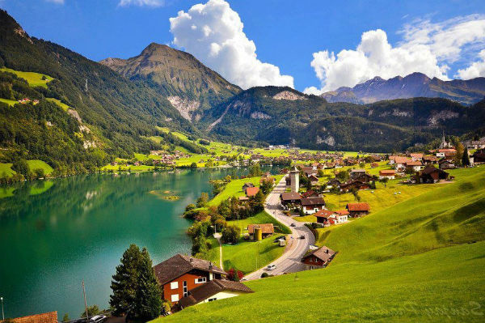
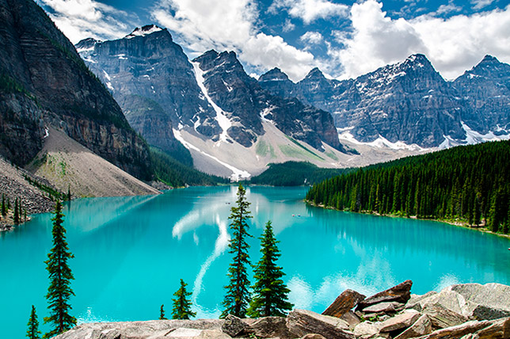
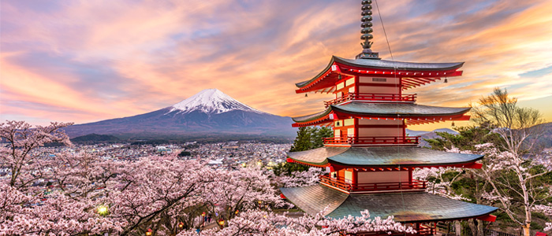
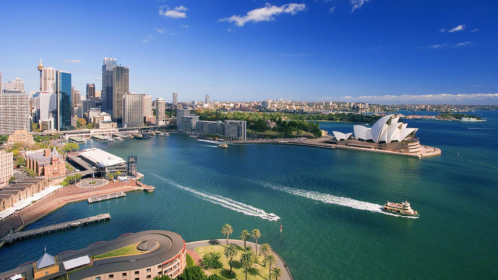
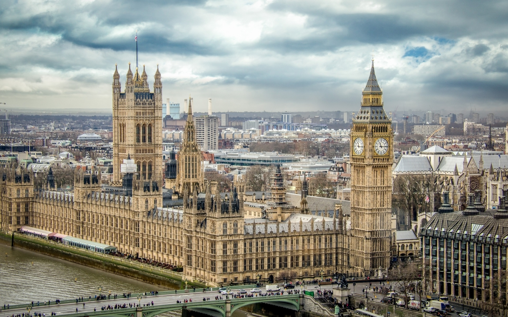
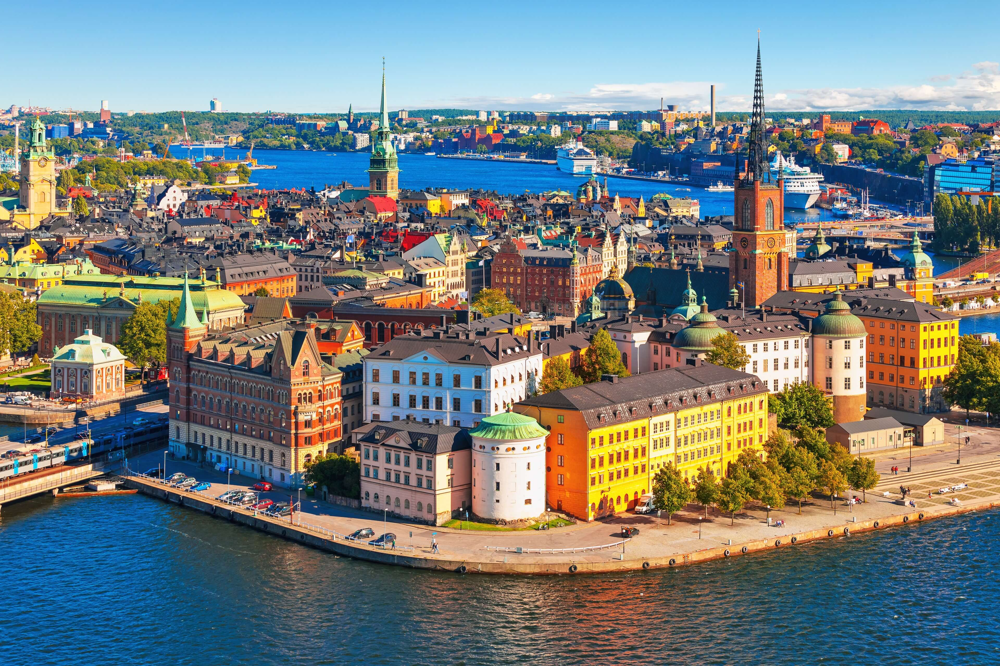
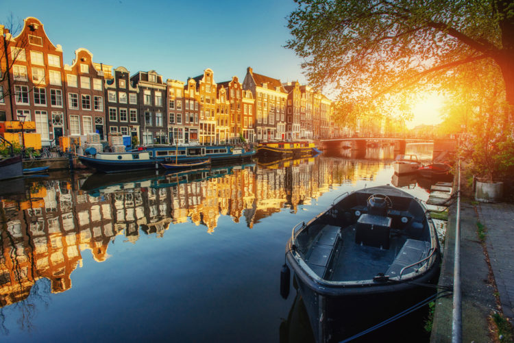
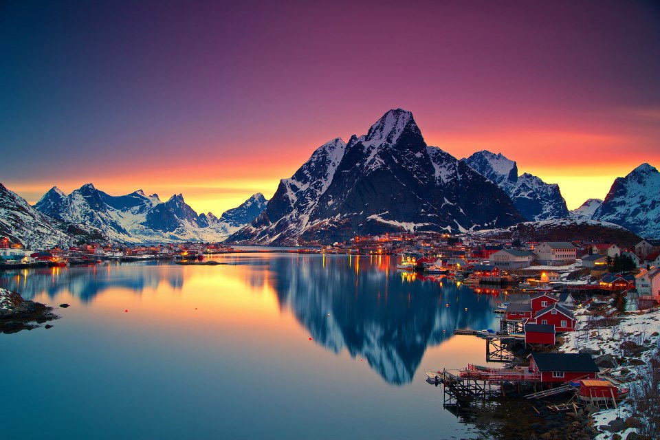

Самодостаточная Швейцария привлекает внимание необыкновенной красотой природы,высочайшим уровнем жизни, богатейшими традициями, которые бережно чтутся на протяжении многих столетий, а также вкусной национальной кухней. Швейцарские Альпы – это не только наслаждение длят глаз, но и активныйотдых: санки, лыжи, пешие прогулки.
Дружелюбная Канада – это удивительное соседство ультрасовременных мегаполисов и девственных природных национальных парков. 2021-й побалует жителей и гостей страны множеством фестивалей и праздников. Поездка в страну кленового листа подарит незабываемые впечатления от знакомства с многовековыми ледниками, уединенными озерами и величественными горами.
Экстраординарная Япония по праву считается страной контрастов. Это место, где переплетаются многовековые традиции и культура с современным образом жизни. Захватывающие пейзажи, древние храмы, японские фестивали, национальная кухня, а также инновационные технологии дружно уживаются на нескольких островах края восходящего солнца.
Развитая Германия может по праву считаться мужской страной. Скоростные автобаны, на которых можно погонять на лучших моделях немецкого автопрома, знаменитое на весь миро пиво и традиционный Октоберфест, колбаски с тушенной капустой непременно придутся по нраву сильной половине населения. А вот женская может побаловать себя шопингом, неспешными прогулками по узеньким улицам городов, которые словно сошли со страниц средневековой сказки.

Увлекательная Австралия объединяет природные красоты, дикую природу, белоснежные пляжи, теплый океан, космополитические мегаполисы. Путешественники особым образом отмечают непринужденную атмосферу, либеральное мышление, расслабленный образ жизни местного населения. К тому же, где как не в Австралии вы сможете пожать лапу коалам и понаблюдать за кенгуру.
Чопорная Великобритания – это не только одна из старейших держав в Европе и мире, но богатая и разнообразная страна, где каждый путешественник найдет для себя памятные места. Одни – роскошную архитектуру, другие – природное разнообразие ландшафтов, третьи – отдохнут культурно в многочисленных музеях и галереях, четвертные – расслабятся в пабах.
Страна больших возможностей – США. Есть ли люди, которые не хотели бы побывать в одной из самых свободных стран мира. Прокатиться на машине от западного побережья к восточному, от Нью-Йорка к Майами? Кажется, что здесь есть всё: море и океан, горы и пустыни, реки, озера и водопады. Конечно же, в США не получиться отказаться от одного из самых больших удовольствий – шоппинга.
Сказочная Швеция – это возможность побывать еще в одном европейском королевстве, побывать в многочисленных замках, принять участив в рыцарском турнире, а может даже и совершить круиз в страны Прибалтики. Да, не забудьте заглянуть в стокгольмское метро.
Демократичные Нидерланды манят туристов своими либеральными взглядами на человеческие пороки. В этой стране можно все. Насладиться бескрайними цветочными полями, стать участником сырного аукциона, прокатиться на велосипеде, прикоснуться к Северному морю или взобраться на одну из старинных мельницу.
Волшебная Норвегия – одна из самых уютных скандинавских стран. Интригующая история, умопомрачительные красоты фьордов, волнующее северное сияние и местная кухня подарят вам удивительный калейдоскоп самых незабываемых эмоций.
